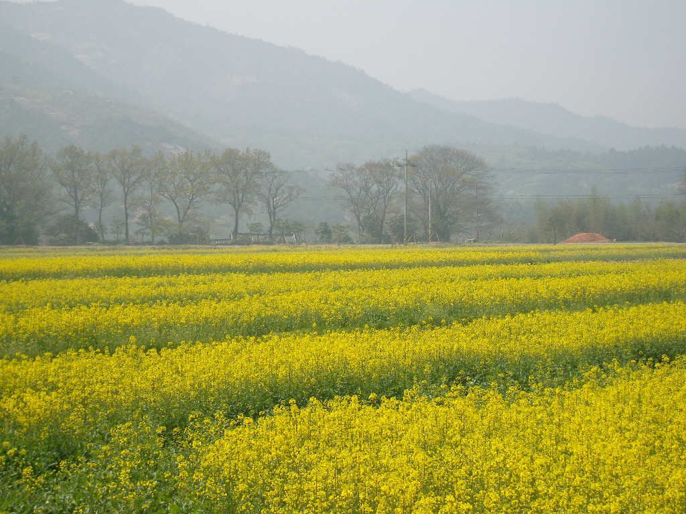

영암군의회 "햇빛소득마을, 수익 나누기 전에 자부담·대출 상환 기준부터"…죽정마을 태양광 500kW·ESS 1.5MWh에 14억 원

주요사업장 현장방문 결과보고서에서 지방소멸대응기금·대출 이자 지원·저금리 금융 협약 검토 요구…영암은 10개 마을 9개 사업 조건부 선정, 보고서 속 수익 계획은 마을기금·취약계층 지원 각 40%
전남 영암군의회가 햇빛소득마을 조성사업을 두고, 태양광 발전수익을 마을복지에 쓰기에 앞서 주민 자부담과 대출 상환을 반영한 운영기준부터 세우라고 요구했다. 이 요구는 군의회가 제329회 임시회 기간에 공공시설·도시개발·농업유통·수소선박·재생에너지 등 11개 주요사업장을 돌아본 뒤 낸 현장방문 결과보고서에 담겼다. 영암에서는 올해 1·2차 공모로 10개 마을이 9개 사업에 조건부 선정됐고, 두 마을이 협동조합 하나를 함께 꾸려 참여한 곳도 들어 있다. 군의회가 찾은 군서면 죽정마을은 태양광 500kW와 에너지저장장치(ESS) 1.5MWh를 세우는 사업으로 태양광 8억 원, ESS 6억 원 등 모두 14억 원이 들며, 보고서에 적힌 수익 활용계획은 마을기금 40%, 취약계층 지원 40%, 유지보수 10%, 예비비 10%다. 군의회는 마을 자부담과 융자금 상환 부담을 덜도록 재원 조달계획을 다시 따져 지방소멸대응기금 활용, 대출 이자 지원, 저금리 금융 협약 등을 검토하고, 군유지 임대료와 한국농어촌공사 관리부지 사용료, 마을별 부지 확보·전력망 연결·인허가 여건도 미리 점검하라고 주문했다. 수익 배분은 대출 상환과 시설 유지관리비를 반영한 사용기준을 주민 합의로 정하고 회계 공개와 정기점검 체계를 갖추라는 것이 군의회 요구이며, 영암군이 이를 어떻게 반영할지는 아직 알려지지 않았다.
시민에너지 관점
14억 원짜리 마을 발전소에서 수익의 80%를 마을기금과 취약계층 지원에 쓰겠다는 계획은 햇빛 수익이 마을 복지로 곧장 돌아갈 수 있다는 점을 보여 주지만, 보고서에 실린 배분표에는 대출 상환 항목이 따로 없다. 빚을 지고 시작한 마을이 상환에 쫓기면 나눌 몫이 줄고 사업이 오히려 주민 짐이 된다는 걱정이 나오는 까닭이며, 그래서 상환금과 유지관리비를 먼저 떼고 남는 돈을 나누는 순서를 주민총회가 정하고 장부를 공개하는 일이 배분 비율보다 앞서야 한다. 이자와 부지 사용료처럼 마을 혼자 감당하기 어려운 부담을 공공이 덜어 주고, 쓰임새는 주민이 정하는 구조여야 마을이 이름만이 아닌 실제 주인으로 남는다. 영암군은 군의회 요구를 보고서에 묶어 두지 말고, 이자 지원과 부지 사용료 기준을 9개 사업 전체에 적용할 원칙으로 내놓아야 한다.
출처: 영암열린신문 2026-10-30 선호성 원문 보기
霊岩郡議会「ひだまり所得村、収益を分ける前に自己負担・ローン返済の基準を」…竹亭村の太陽光500kW・ESS 1.5MWhに14億ウォン
主要事業所の現地視察結果報告書で地方消滅対応基金・ローン利子支援・低金利の金融協約の検討を要求…霊岩では10村・9事業が条件付き選定、報告書の収益計画は村基金・弱者支援が各40%
韓国全羅南道の霊岩（ヨンアム）郡議会は、「ひだまり所得村（햇빛소득마을）」造成事業について、太陽光発電の収益を村の福祉に使う前に、住民の自己負担とローン返済を反映した運営基準をまず整えるよう求めた。この要求は、郡議会が第329回臨時会の期間中に公共施設・都市開発・農業流通・水素船舶・再生可能エネルギーなど11の主要事業所を回った後にまとめた現地視察結果報告書に盛り込まれた。霊岩では今年の第1・2次公募で10の村が9事業で条件付き選定され、二つの村が一つの協同組合を共につくって参加した例も含まれている。郡議会が訪れた郡西面の竹亭（チュクジョン）村は、太陽光500kWとエネルギー貯蔵装置（ESS）1.5MWhを設置する事業で、太陽光8億ウォン、ESS 6億ウォンの計14億ウォンがかかり、報告書に記された収益活用計画は村基金40%、社会的弱者支援40%、維持補修10%、予備費10%となっている。郡議会は、村の自己負担と融資金の返済負担を減らせるよう資金調達計画を見直し、地方消滅対応基金の活用、ローン利子の支援、低金利の金融協約などを検討するとともに、郡有地の賃貸料や韓国農漁村公社管理用地の使用料、村ごとの用地確保・送配電網への接続・許認可の条件も事前に点検するよう注文した。収益配分はローン返済と施設の維持管理費を反映した使用基準を住民の合意で定め、会計公開と定期点検の体制を整えるべきだというのが郡議会の要求で、霊岩郡がこれをどう反映するかはまだ明らかになっていない。
市民エネルギーの視点
14億ウォンの村の発電所で収益の80%を村基金と弱者支援に充てるという計画は、太陽光の収益がそのまま村の福祉に戻りうることを示しているが、報告書の配分表にはローン返済の項目が別にない。借金を抱えて始めた村が返済に追われれば分け合う分が減り、事業がかえって住民の重荷になるという懸念が出るのはそのためで、だからこそ返済金と維持管理費を先に差し引いて残りを分ける順序を住民総会が決め、帳簿を公開することが配分比率より先に来なければならない。利子や用地使用料のように村だけでは負いきれない負担を公共が軽くし、使い道は住民が決める仕組みであってこそ、村は名ばかりでない本当の持ち主であり続けられる。霊岩郡は郡議会の要求を報告書の中にとどめず、利子支援と用地使用料の基準を9事業すべてに適用する原則として示すべきだ。
出典: 霊岩ヨルリン新聞 2026-10-30 ソン・ホソン 原文を読む
灵岩郡议会："阳光收入村分配收益前，先定自付和贷款偿还标准"…竹亭村光伏500kW、储能1.5MWh投资14亿韩元
主要项目现场考察结果报告要求研究利用地方消亡应对基金、贷款贴息和低息金融协议…灵岩10个村9个项目获有条件入选，报告中的收益计划为村基金和弱势群体支援各40%
韩国全罗南道灵岩郡议会就"阳光收入村"（햇빛소득마을）建设项目提出，在把光伏发电收益用于村庄福利之前，应先制定反映村民自付部分和贷款偿还的运营标准。这一要求写入了郡议会在第329次临时会期间走访公共设施、城市开发、农业流通、氢燃料船舶、可再生能源等11个主要项目现场后提交的现场考察结果报告。灵岩今年通过第一、二轮公开征集，共有10个村以9个项目获得有条件入选，其中包括两个村共同组建一个合作社参与的案例。郡议会走访的郡西面竹亭村项目建设光伏500kW和储能系统（ESS）1.5MWh，总投资14亿韩元，其中光伏8亿韩元、储能6亿韩元；报告所列的收益使用计划为村基金40%、弱势群体支援40%、维护10%、预备费10%。郡议会要求重新审视资金筹措计划，研究利用地方消亡应对基金、贷款贴息、低息金融协议等办法，减轻村庄自付部分和贷款偿还压力，并事先检查郡有土地租金、韩国农渔村公社管理用地使用费，以及各村的用地落实、电网接入和审批条件。郡议会还要求，收益分配应通过村民协商制定反映贷款偿还和设施维护费用的使用标准，并建立账目公开和定期检查制度；灵岩郡将如何采纳这些要求，目前尚不清楚。
市民能源视角
在一座投资14亿韩元的村级电站里，把80%的收益用于村基金和弱势群体支援，说明阳光收益可以直接回流到村庄福利，但报告中的分配表并没有单列贷款偿还项目。背着贷款起步的村庄一旦被还款追着走，可分配的部分就会减少，项目反而成为村民的负担，这正是人们担心的原因；因此，先扣除还款和维护费用、再分配余额的顺序由村民大会决定并公开账目，应当先于讨论分配比例。像利息和用地使用费这类村庄独自难以承担的负担由公共部门减轻、用途由村民决定，村庄才能成为名副其实的主人。灵岩郡不应把郡议会的要求留在报告里，而应把贴息和用地使用费标准作为适用于全部9个项目的原则公布出来。
来源: 灵岩开放新闻 2026-10-30 Seon Ho-seong 查看原文
Yeongam county council tells solar income villages to set self-funding and loan repayment rules before sharing revenue; Jukjeong village plans 500kW of solar and 1.5MWh of storage for 1.4 billion won
A site-visit report asks the county to consider its local-decline response fund, loan interest support and low-interest finance agreements; 10 villages in Yeongam were conditionally selected for nine projects, and the report's revenue plan puts 40% each into a village fund and support for vulnerable residents
The council of Yeongam County in South Jeolla Province has called for operating rules that account for residents' own contributions and loan repayments to be set before solar revenue from the county's "sunlight income village" projects is spent on village welfare. The demand appears in a site-visit report the council produced after touring 11 major project sites, covering public facilities, urban development, farm distribution, hydrogen ships and renewable energy, during its 329th extraordinary session. In Yeongam, 10 villages were conditionally selected for nine projects in this year's first and second rounds of applications, including one case in which two villages formed a single cooperative to take part together. Jukjeong village in Gunseo-myeon, which the council visited, plans 500kW of solar panels and a 1.5MWh energy storage system (ESS) costing 1.4 billion won in total, 800 million won for the solar and 600 million won for the ESS, and the revenue plan set out in the report allocates 40% to a village fund, 40% to support for vulnerable residents, 10% to maintenance and 10% to reserves. The council asked the county to review funding plans so as to ease villages' own contributions and loan repayments, considering the use of the local-decline response fund, loan interest support and low-interest finance agreements, and to check in advance the rent on county-owned land, fees for land managed by the Korea Rural Community Corporation, and each village's site, grid connection and permit conditions. The council also wants revenue-sharing rules that reflect loan repayments and maintenance costs to be agreed by residents, backed by public accounts and regular inspections; how the county will respond has not yet been made public.
Citizen Energy View
A plan to spend 80% of the revenue from a 1.4-billion-won village power plant on a village fund and support for vulnerable residents shows that solar income can flow straight back into village welfare, yet the allocation table in the report has no separate line for loan repayments. That is why people worry that a village starting out in debt will see its shareable income shrink under repayment pressure, turning the project into a burden on residents; the order of first setting aside repayments and maintenance and then sharing what is left should be decided by a residents' assembly, with the books open, before anyone argues over percentages. Only when the public sector eases burdens a village cannot carry alone, such as interest and land fees, while residents decide how the money is used, will villages remain real owners rather than owners in name. Yeongam County should not leave the council's demands sitting in a report but set out its interest support and land-fee rules as principles for all nine projects.
Source: Yeongam Open News 2026-10-30 Seon Ho-seong Read the original